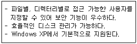
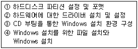
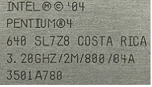
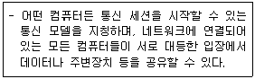

PC정비사-2급 (2012-01-15 기출문제)
1과목: PC유지보수
1. CPU 조립과 관련된 설명으로 잘못된 것은?
- CPU 소켓은 장착할 수 있는 방향이 정해져 있다.
- CPU 열을 방출하기 위해 냉각팬을 장착한다.
- 냉각팬은 별도의 전원이 필요하지 않다.
- 소음을 줄이거나 성능을 높이기 위해 냉각팬 제품을 바꿀 수 있다.
(정답률: 91%)

2. 처음 구입한 하드디스크를 설치하고, 그 하드디스크로 부팅을 시도할 때 나타나는 메시지로 올바른 것은?
- Serial Presence Detect(SPD) unavailable - memory speed unknown
- Disk Boot Failure, Insert System Disk And Press Enter
- Invalid configuration information - please run SETUP program
- No ROM Basic System Halted
(정답률: 87%)
3. Windows XP의 제어판에서 설정가능한 항목에 대한 설명으로 잘못된 것은?
- 전원옵션 - 컴퓨터에 대한 절전 설정을 구성
- 내게 필요한 옵션 - 사용자의 시력, 청력, 기동성에 따라 컴퓨터 설정을 조정함
- 키보드 - 커서 깜박임 속도 및 문자 반복 속도 등의 키보드 설정을 사용자가 지정함
- 프로그램 추가/삭제 - 파일 및 폴더 표시를 사용자가 지정하고, 파일 확장명 연결을 변경함
(정답률: 86%)
4. PC를 직접 조립하려고 할 때 좋은 성능의 부품을 고르는 방법이 잘못된 것은?
- 모니터는 도트 피치 숫자가 클수록 성능이 좋은 제품이다.
- 그래픽 카드 성능은 칩셋과 그래픽 메모리 성능의 영향을 받는다.
- RAM은 가능한 대역폭이 큰 제품을 구매하는 것이 추후 업그레이드에 유리하다.
- 메인보드에 따라 장착 가능한 CPU가 정해져 있으므로 호환 가능한 CPU를 먼저 확인하여 선택한다.
(정답률: 75%)
5. 램 상주 프로그램이 지나치게 많아 프로그램이 메모리 부족으로 실행되지 않을 때 나타나는 메시지는?
- CMOS Failed
- Out of Memory
- Invalid Command
- NO CNTRLR PRESENT
(정답률: 91%)
6. Windows XP에서 하드디스크의 공간이 부족할 경우에 해결하기 위한 방법이 잘못된 것은?
- 백업, 로그 파일 등 필요 없는 파일들을 검색하여 삭제한다.
- 시스템 도구의 ‘디스크 정리’를 이용하여 필요 없는 파일을 삭제한다.
- 사용하지 않는 Windows 구성 요소를 삭제한다.
- 각종 응용프로그램의 실행 파일을 바탕화면에 모두 모아서 관리한다.
(정답률: 83%)
7. PC를 처음 조립할 때, 가장 기본적인 부팅 테스트를 하기위해 반드시 필요한 부품이 아닌 것은?
- CD-ROM
- 메인보드
- 파워 서플라이
- CPU
(정답률: 90%)
8. Windows XP에서 지원하는 동적 볼륨 중 내결함성을 지원하는 볼륨은?
- 단순
- RAID-5
- 스팬
- 스트라이프
(정답률: 83%)
9. PC의 전원 공급 장치에서 출력전압을 측정하려고 할 때, 회로 시험기의 선택 스위치의 설정 상태로 올바른 것은?
- ACV
- DCV
- mA
- R
(정답률: 75%)
10. BIOS 설정을 할 때 설정할 수 있는 항목이 아닌 것은?
- 플로피 디스크의 트랙과 섹터 수
- 부팅 드라이브의 우선순위
- 시스템의 날짜 및 시간
- 하드디스크의 타입
(정답률: 71%)
11. Windows XP가 실행된 상태에서 [디스크관리] 기능을 이용하여 HDD의 분할 영역을 삭제 또는 분할 하려고 한다. 이때 분할영역을 변경할 수 없는 볼륨은?
- 쓰기 방지 탭이 붙어 있는 하드디스크 볼륨
- UDMA 기능을 지원하는 하드디스크 볼륨
- Windows가 설치된 하드디스크 볼륨
- 512MB 이하의 저용량 하드디스크 볼륨
(정답률: 77%)
12. Windows 업그레이드에 대한 설명으로 잘못된 것은?
- Custom 업그레이드 설치 작업은 폴더 변경 및 파일 시스템을 변경할 수 있다.
- Windows 95에서 업그레이드할 경우, 곧바로 Windows XP로 업그레이드할 수 있다.
- 호환성이 없는 것으로 판단되는 소프트웨어는 제거한 후에 업그레이드를 수행하는 것이 좋다.
- 동적 업데이트 옵션을 선택하면, 웹 사이트로부터 장치와 어플리케이션을 위한 업데이트를 진행할 수 있다.
(정답률: 84%)
13. 다음 항목중에서 컴퓨터 사용의 부적절한 자세로 인하여 목, 어깨, 팔 등의 통증을 말하는 직업병은?
- VDT(Visual Display Terminal) 증후군
- EMI(Electro Magnetic Interference) 증후군
- Hardware 증후군
- PCI(Peripheral Component Interconnect) 증후군
(정답률: 91%)
14. 하드디스크 용량이 부족하여 새로운 E-IDE 하드디스크를 하나 더 구입하여 설치하였으나, BIOS에서 인식이 되지 않을 때 점검해야 할 사항으로 잘못된 것은?
- Cable들이 바르게 연결 되어 있는지 점검한다.
- Master/Slave 점퍼가 제대로 되어 있는지 점검한다.
- CMOS Setup에서 하드디스크 설정을 확인한다.
- Partition이 잘 되어 있는지 점검한다.
(정답률: 76%)
15. 시스템의 성능 평가와 가장 관계가 적은 것은?
- 프로그램 크기 (Program Size)
- 신뢰도 (Reliability)
- 경과 시간 (Turn-around Time)
- 사용 가능도 (Availability)
(정답률: 76%)
2과목: PC운영체제
16. 다음 중 컴퓨터의 사용 목적으로 적합하지 않은 것은?
- 업무 전산화
- 원격교육
- 데이터의 처리 및 보관
- ID의 해킹과 도용
(정답률: 93%)
17. 용어에 대한 설명 중 잘못된 것은?
- 디프래그멘테이션(Defragmentation) : 디스크의 이물질 제거 작업이다.
- 시스템 최적화 : 시스템의 활용 상태나 작업 효율을 최대화하기 위해 행해지는 일련의 작업과정을 말한다.
- 하드웨어 충돌 : 두 개 이상의 장치가 동일한 자원을 사용할 때를 일컫는다.
- 디스크 오류검사 : 디스크에 저장된 파일이나 폴더의 오류, 구조 검사 및 복구를 한다.
(정답률: 84%)
18. 웹브라우저가 기본적으로 이해하는 정보의 형태를 제외한 동영상이나 소리 등을 듣기 위해 별도로 설치하는 프로그램은?
- CGI 프로그램
- 자바 프로그램
- 플러그인 프로그램
- 쿠키 프로그램
(정답률: 76%)
19. 주기억 장치의 메모리 용량보다 큰 프로그램을 사용할 수 있는 메모리 이용 기법은?
- Cache Memory
- Virtual Memory
- Core Memory
- DMA
(정답률: 76%)
20. Windows XP의 제어판 메뉴에서 사용 가능한 기능에 대한 설명 중 잘못된 것은?
- [Windows 보안 센터] - 시스템의 암호 설정 가능
- [디스플레이] - 화면의 해상도 변경 가능
- [사용자 계정] - 사용자의 암호 설정 가능
- [프로그램 추가/제거] - 프로그램의 추가/삭제 가능
(정답률: 86%)
21. 인터넷 익스플로러에 나타나는 오류 메시지에 대한 설명 중 잘못된 것은?
- 503 Service Unavailable - 해당 웹 사이트의 서버에 과부하등의 이유로 서비스가 멈춘 경우
- 403 Forbidden - 패스워드와 같은 특별한 액세스 승인을 필요로 하는 사이트의 경우
- Bad File Request - 특별한 프로그램 설치가 필요한 페이지인 경우
- 404 Not Found - 브라우저가 호스트 컴퓨터는 찾았으나 요청된 특정 도큐먼트를 찾지 못한 경우
(정답률: 84%)
22. Windows XP의 종류가 아닌 것은?
- Windows XP Professional
- Windows XP Home Edition
- Windows XP Media Center Edition
- Windows XP Server Edition
(정답률: 68%)
23. Windows XP의 사용자 및 그룹 관리에 대한 설명 중 잘못된 것은?
- Windows XP는 시스템 관리자 기능이 적용된 다중 사용자를 지원하며 사용자 관리를 위한 도구를 제공한다.
- Administrators는 시스템 관리자 그룹으로 모든 권한을 갖고 있으며 직접 사용 권한을 변경할 수 있다.
- 사용자들을 그룹으로 묶어 관리하여 사용자 권한 설정, 보안 설정, 공유 자원 설정 등에서 보다 편리한 이용을 할 수 있다.
- 사용자 계정의 삭제는 컴퓨터 관리자 이외에 다른 사용자로 로그온된 상태에서만 수행할 수 있다.
(정답률: 78%)
24. CD-ROM 드라이브에 CD를 삽입하면 자동으로 실행이 되도록 하는 파일로, CD 안에 있어야 하는 파일은?
- manualexec.bat
- config.sys
- autorun.inf
- msex.exe
(정답률: 83%)
25. 다음에 설명하는 파일 시스템은?

- FAT
- FAT32
- NTFS
- HPFS
(정답률: 79%)
26. "장치 관리자"를 통해서 할 수 있는 작업이 아닌 것은?
- 장치의 이상 유무 판단
- 장치 드라이버 업데이트
- 장치의 리소스 확인
- 드라이버의 드라이버 서명 확인 여부
(정답률: 76%)
27. Windows XP에서 TCP/IP로 구성된 네트워크상에 연결되어 있는 원격지 컴퓨터로의 네트워크 경로를 조회하는 명령어는?
- ping
- nbtstat
- tracert
- netstat
(정답률: 65%)
28. Windows XP 설치 CD만을 이용하여 Windows XP를 설치할 때의 과정을 올바른 순서로 나열한 것은?

- ③→①→②→④
- ③→①→④→②
- ①→③→②→④
- ④→①→③→②
(정답률: 81%)
29. MMC(Microsoft Management Console)에 대한 설명 중 잘못된 것은?
- 콘솔이라는 관리 도구 모음을 만들고 저장하고 여는 도구이다.
- 콘솔에는 스냅인, 확장 스냅인, 모니터 컨트롤, 작업, 마법사 그리고 Windows XP 시스템의 여러 하드웨어, 소프트웨어 및 네트워킹 구성 요소를 관리하는데 필요한 문서 등의 항목이 들어 있다.
- 기존 MMC 콘솔에 항목을 추가하거나 새 콘솔을 만들 수는 없다.
- 콘솔에는 콘솔트리를 표시 할 수 있는 하나 이상의 창이 있다.
(정답률: 83%)
30. 컴퓨터에 바이러스가 감염되었을 때 나타나는 증상이 아닌 것은?
- 컴퓨터의 속도가 평상시보다 빨라진다.
- 프로그램이 잘못된 동작을 한다.
- 파일의 크기가 커진다.
- 컴퓨터가 부팅이 되지 않는다.
(정답률: 89%)
3과목: PC주변기기
31. 메모리의 듀얼 채널 구성에 대한 설명 중 잘못된 것은?(단, 메인보드는 Intel 칩셋을 사용하고, 지원되는 4개의 Dimm 슬롯은 CPU에 가까운 것부터 각각 1번, 2번, 3번, 4번 순으로 지정되어 있으며, Flex Memory와 같은 기술은 지원되지 않는다.)
- CPU가 요구하는 데이터 전송 대역폭을 램이 온전하게 제공할 수 있도록 램의 데이터 전송대역폭과 CPU의 데이터 전송 대역폭을 일치 시키는 것을 말한다.
- 2개의 메모리를 사용하여 듀얼 채널로 구성할 때는 같은 용량의 메모리로 구성해야 한다.
- 2개의 메모리를 사용하여 듀얼 채널로 구성할 때는 아무 슬롯에나 장착하여도 무방하다.
- 기본적으로 단면 또는 양면 한 종류의 메모리로 구성해야 한다.
(정답률: 77%)
32. 스캐너와 프린터가 표현할 수 있는 그림의 세밀하기를 나타내는 단위는?
- CPS
- BPS
- PPM
- DPI
(정답률: 82%)
33. 주변기기의 속도향상을 위한 것으로 전송속도는 12Mbps 또는 480Mbps이며 100개가 넘는 장치를 연결할 수 있는 방식은?
- PCI 방식
- SCSI 방식
- USB 방식
- IEEE1394 방식
(정답률: 70%)
34. 하드디스크에 대한 설명 중 틀린 것은?
- FAT 파일 시스템은 NTFS로 변경할 수 있다
- NTFS 파일 시스템은 FAT로 변경할 수 있다
- 파티션 설정시 주 파티션은 최대 4개까지 만들 수 있다
- 확장 파티션에 만들어진 논리 드라이브는 무제한으로 만들 수 있다
(정답률: 60%)
35. 가장 빠른 비디오 카드 인터페이스 방식은?
- PCI-Express
- VESA
- AGP
- EIDE
(정답률: 83%)
36. USB에 대한 설명 중 잘못된 것은?
- 범용 시리얼 버스로 주변장치를 연결하기 위한 개인용 인터페이스이다.
- Hot Plug 지원으로 컴퓨터의 전원이 켜져 있는 상태에서도 장치 인식이 가능하다.
- 별도의 전원이 필요없이 자체 +12V 전원이 공급된다.
- USB 2.0은 480Mbps, USB 3.0은 5Gbps까지를 지원한다.
(정답률: 76%)
37. 키보드에 대한 설명으로 잘못된 것은?
- 메커니컬 방식은 물리적인 스프링이 있어 타자충격을 흡수하여 충격누적으로 인한 손목관절의 엘보우(Elbow)를 예방하여 준다.
- 자판을 누르면 그에 해당하는 신호가 컨트롤러에 전송되는 방식은 메커니컬 방식과 멤브레인 방식이 동일하다.
- 메커니컬 방식은 멤브레인 방식에 비해 제작 공정이 단순하다.
- 메커니컬 방식과 멤브레인 방식의 차이점은 신호를 발생시키는 전극의 접촉 방식이다.
(정답률: 74%)
38. L2 캐시에 대한 설명으로 잘못된 것은?

- CPU와 주기억 장치간의 데이터 병목 현상을 줄이기 위해 사용된다.
- L2 캐시의 용량이 작을수록 컴퓨터의 수행 속도는 빨라진다.
- 컴퓨터 내의 캐시 메모리의 계층들이다.
- L1 캐시보다 약간 크고, CPU에 사용되는 두 번째 레벨이다.
(정답률: 82%)
39. 메인보드 선택시 고려 사항 중 잘못된 것은?
- 메인보드의 성능은 칩셋이 90% 이상을 차지할 만큼 중요하므로 CPU, 메모리를 잘 지원하는 칩셋이 장착된 메인보드를 선택한다.
- 처음 출시된 칩셋은 버그가 있을 수도 있으므로 안정성이 검토된 칩셋을 구입하는 것이 좋다.
- 바이오스 업데이트가 쉬우면서도 정기적으로 이루어 지는 제품을 선택한다.
- 메인보드는 안정성 보다 빠른 속도와 오버클럭킹이 잘 되는 제품을 선택한다.
(정답률: 84%)
40. 모니터 화면의 한 화소는 빨강, 녹색, 파랑의 3개 색소로 구성되어 있다. 다음 중 화점 간격을 나타내는 것은?
- 해상도
- 도트 피치
- 수평 주파수
- 수직 주파수
(정답률: 81%)
41. L2 캐시의 동작 방식이 아닌 것은?
- 비동기 방식
- 동기 방식
- 슬롯 방식
- 파이프라인 버스트 방식
(정답률: 77%)
42. 갑작스런 정전으로부터 컴퓨터 시스템 등의 안전한 사용을 위해 전원을 안정적으로 공급해주는 장치는?
- UPS
- AVR
- SCANNER
- FAX
(정답률: 74%)
43. 전기적인 힘을 가하여 발생하는 기포를 작은 노즐을 이용하여 만든 잉크를 종이위에 뿌려 문자나 그림을 출력하는 프린터는?
- 잉크젯 프린터
- 도트 프린터
- 레이저 프린터
- 펜 플로터
(정답률: 83%)
44. 메인보드의 칩셋(Chip Set)에 대한 설명으로 잘못된 것은?
- 각 주변장치들이 적당하게 작동하도록 조절하는 역할을 담당하는 장치이다.
- 최근의 칩셋은 마이크로프로세서 제어 기능의 일부를 담당하는 지능적 칩셋들이 많다.
- 칩셋은 카드 형식으로 제공되므로 메인보드의 PCI 슬롯에 장착하면 된다.
- 여러 개의 칩들은 각각 메모리, PCI, USB, CPU, 메인보드에서 데이터의 흐름, 내장형 장치들을 관리한다.
(정답률: 68%)
45. 종료(Termination) 설정이 필요 없는 장치는?
- 스카시 호스트 어댑터
- 동축 케이블을 이용한 네트워크 구성
- 스카시를 이용한 스캐너
- UTP 케이블을 이용한 네트워크 구성
(정답률: 73%)
4과목: PC네트워크
46. 인터넷 상의 서버로부터 자신의 컴퓨터에 파일을 다운로드하고 업로드 하는데 사용하는 프로토콜은?
- FTP
- PPP
- NetBIOS
- IPX/SPX
(정답률: 75%)
47. 다음에 설명하는 네트워크 모델은?

- 클라이언트/서버 모델
- 마스터/슬레이브 모델
- Peer to Peer 모델
- N2N 모델
(정답률: 81%)
48. IBM에서 근거리 통신망을 위해 만든 최초의 컴퓨터 네트워크 프로토콜은?
- NetBIOS
- IPX
- SPX
- UTP
(정답률: 72%)
49. 상용화된 소프트웨어를 변조하여 사용 또는 배포하는 행위는?
- 크랙
- 해킹
- 복제
- 도용
(정답률: 85%)
50. 네트워크 장비의 설명으로 잘못된 것은?
- Bridge : OSI 참조 모델의 데이터 링크 계층에서 동작하고 두 세그먼트를 연결해 주는 장비이다.
- Router : 서로 상이한 구조를 갖는 망들을 연결할 수 있는 기능을 제공하며 OSI 계층 구조의 네트워크 계층에서 동작한다.
- Repeater : 2개 이상의 동일한 LAN 사이를 연결하여 네트워크 범위를 확장하고 스테이션간의 거리를 확장한다.
- Switch : 데이터의 전기적인 신호를 재생하고 MAC주소에 대해 필터링 기능을 수행한다.
(정답률: 72%)